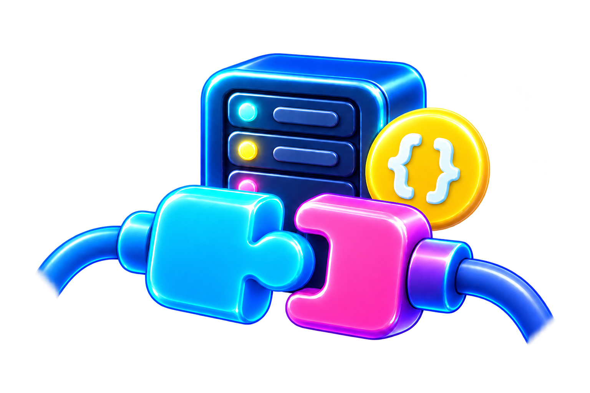
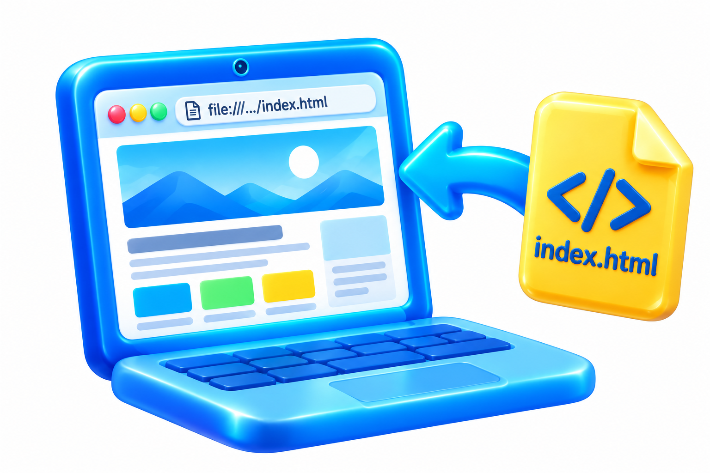
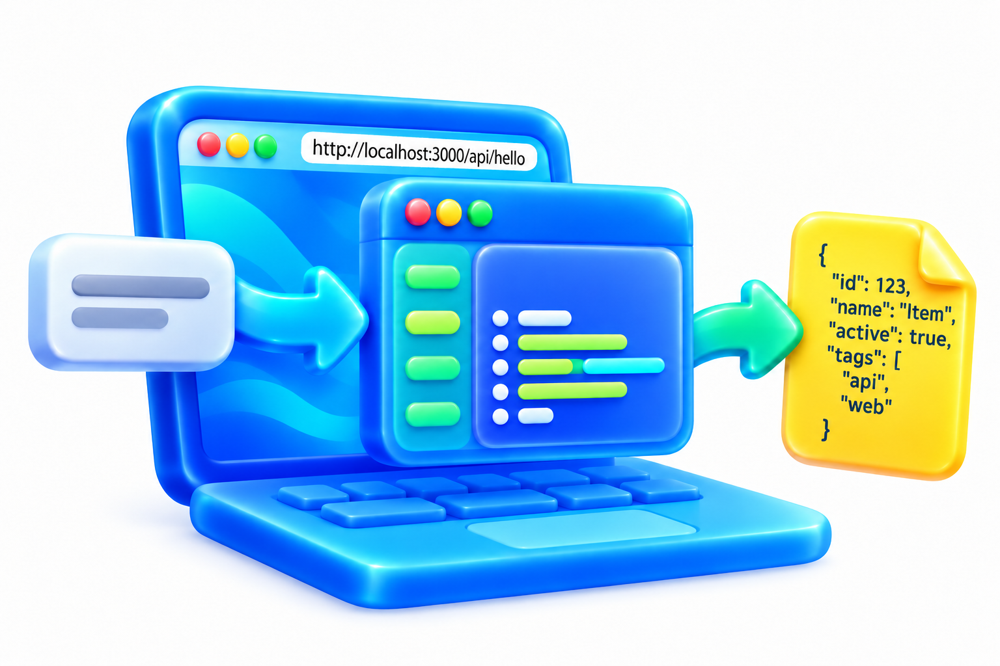
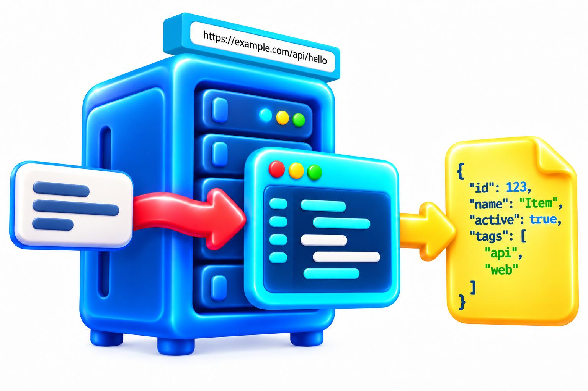

Application
アプリ：目的に応じた道具
CONNECT / REQUEST / RESPONSE
ボタンを押す。データが届く。
その裏側をのぞくと、Webのつながり方が見えてくる。

01 / APIとは
名前を三つの言葉に分けると、役割が見えてきます。
アプリ：目的に応じた道具
プログラム・機能やデータ
間に置かれるもの・窓口
つまり、プログラムのデータや機能をやり取りする窓口です。
ここではインターネット上にある窓口へアクセスして、機能やデータを使えるようにするWeb APIを学びます。
02 / APIを体感
FORTUNE / API MOCKUP
誕生月を選ぶと、fortune.jsonから受け取った60件のデータの中から、画像とひとことを1件表示します。
月を選んで、「おたよりを受け取る」を押してみましょう。
12 MONTHS × 5 LETTERSまだおたよりを受け取っていません。
03 / JSONで中身を見る
JSONは、名前と値を組にしてデータを表す書き方です。FORTUNE / API
MOCKUPでは、"month"が選んだ月、"message"が文章、"image"が表示する画像の場所を表します。JSONそのものはプログラムではありません。
新しいタブでJSONそのものを確認できます。画面のデザインと、データの中身は別の役割です。
{
"month": 5,
"id": "05-01",
"message": "がんばる日と休む日、どちらも大切にすると調子が整いそうです。",
"image": "images/fortune-05-01.png",
"alt": "ラベンダー色のクッションを抱くマスコット"
}
このページではfortune.jsonを取得しています。Node.jsでサーバーを起動する次の章では、同じようなJSONを「窓口」に応じて返す方法を見ます。
04 / サーバーの役割
Web APIは、サーバー上のデータや機能を使うための窓口です。取得だけでなく、作成・更新・削除も依頼します。窓口であるURLはAPIエンドポイントと呼ばれ、お願いに応答するサーバーが起動して初めて動きます。

file:///…/index.html
保存されたHTMLを読む状態。自作APIへのリクエストを受け付けるプログラムは、まだ動いていません。
ローカルのHTMLから外部APIを呼べることもあります。外部サーバーは存在し、接続の可否はAPIやブラウザの制限によります。
http://localhost:3000/api/hello
Node.jsでサーバーを立ち上げると、自分のPCがお願いを受け付けます。localhostは、いま操作している端末自身です。
スマホでlocalhostを開いても、PCにはつながりません。まずPC上で試します。
https://example.com/api/hello
インターネット上の公開先でサーバーを動かすと、許可された利用者が別の端末から接続できます。
このURLは説明用です。公開には配置・HTTPS・必要な認証などの設定が加わります。画面を開く側はローカルのHTMLでもかまいません。一方、APIの向こう側には、応答するサーバーがあります。サーバーそのものは「サーバーとは？」ページで詳しく体験できます。
05 / APIを作る実際
まずは制作の流れを見てください。今、すべてを理解したりインストールしたりする必要はありません。「考えることがいくつもある」と感じられれば、この段階の目的は達成です。
Node.jsはブラウザの外でJavaScriptを動かす実行環境。公式サイトでOSに合うLTS版を選びます。Windowsならインストーラーを使い、完了後にターミナルを開き直して確認します。
Node.js公式ダウンロード ↗node --version数字のバージョンが表示されれば確認完了。インストール時にOSの確認が出る場合があります。サンプルの起動自体に管理者権限は必要ありません。
Expressは、URLごとに処理を分けたり、返事を返したりしやすくするNode.js用の小さな道具箱です。まずプロジェクトの情報を作り、Expressを追加します。
npm init -y npm install express
URLで処理を分ける、データをJSONにする、見つからない窓口に404を返す。「ただ文字を表示する」までにも、ルールを決めます。
server.jsを保存したフォルダでターミナルを開き、次を実行します。
const express = require('express');
const app = express();
app.get('/api/hello', (req, res) => {
res.json({ message: 'こんにちは、API！' });
});
app.listen(3000, () => console.log('http://localhost:3000/api/hello'));
URLが表示されたら起動中です。ターミナルは開いたままにします。終了はCtrl + C。3000番ポートが使用中なら、競合を解消するか別の番号に変更します。
node server.js
同じPCのブラウザのアドレス欄に、次を貼り付けます。
http://localhost:3000/api/hello
返ってくるJSON：
{ "message": "こんにちは、API！" }
サーバーを止めれば接続できなくなります。ファイルが存在するだけでは、APIは応答しません。この例は自分のPCだけで接続できる設定で、インターネットへは公開しません。
実行環境、コード、起動、URL、エラー対応。初めてなら知らないことが続きます。まず覚えたいのは、「サーバーを起動して、窓口へお願いすると、データが返る」という関係です。
06 / AIと一緒に作る
AIエージェントは、APIのコード作成や起動の確認、エラーの原因調べを支援できます。あなたは何を渡して、何を受け取りたいかを決める。作業を小さく区切れば、全部を一度に理解する必要はありません。
利用するAIの権限や環境によって、実行できる作業は変わります。コードができたら実際に接続し、期待するJSONが返るか確認します。
インストールや公開など環境を変える作業は、内容を説明してもらってから進めましょう。APIキーやパスワードは、この練習に必要ありません。
ステップロック方式で一段ずつ進める →
Node.jsで、ローカルだけで動く小さなWeb APIを作りたいです。
私はプログラミング初心者です。一段ずつ進めてください。
## 目的
ブラウザから接続し、JSONが返るしくみを理解する。
## 必須内容
GET /api/hello に接続すると、
{"message":"こんにちは、API！"} を返す。
存在しない窓口には404とJSONのエラーを返す。
## 避けたいこと
外部への公開、課金、APIキー、追加ライブラリ。
インストール前には作業内容を説明する。
## 完成の基準
自分のPCで起動し、実際のJSONをブラウザで確認できる。
起動・停止方法と、各手順の意味を説明する。
まずNode.jsが利用できるか確認するところから始めてください。
09では、スプレッドシートからGoogleカレンダーへ。今回学んだ「お願いを送る・データが返る」を、身近なサービスの連携へつなげます。
09の教材は準備中です。